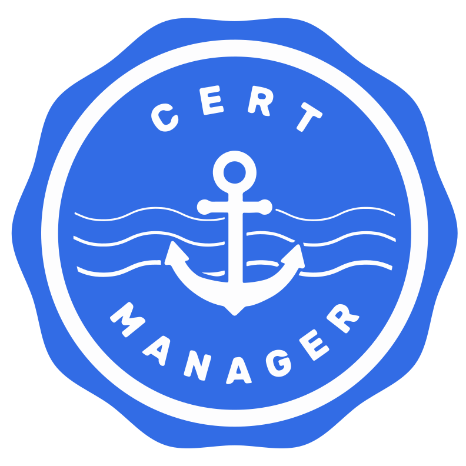
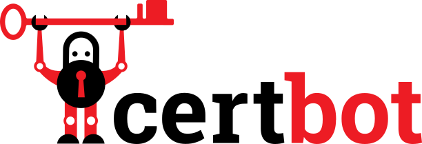

DNS-01, without the credentials
Keep your DNS key. We answer the challenge.
You have been here. A wildcard needs a DNS-01 challenge, that challenge needs
an API token, and the token that proves you control one name can rewrite every record you own. So
it goes into the load balancer's configuration, and into the backup of that configuration,
and you decide not to think about it. It is ugly, and it is unsafe.
There is a better shape for this, and it is already built: publish one CNAME,
once, by hand. After that every renewal is invisible to you, and the key never leaves your
DNS provider — because we never ask for one.
-
Integrate
Works with what you use
The challenge API speaks two protocols: lego's
httpreq, which Traefik configures in one line, and acme-dns, which cert-manager, acme.sh, win-acme, Posh-ACME and Certify The Web already speak. No webhook, no plugin to install for those — you paste a credentials file the console gives you. -
Isolate
A key reaches one thing
A key carries grants, not a role. A staging key cannot touch production because no grant would let it — and with an address range and an expiry it stops being a permanent secret.
-
Audit
Every challenge is on the record
Who published a value, whether a certificate authority actually came for it, from where, and whether validation completed. DNS-01 usually fails silently and you find out when a certificate expires.
The clients you already run
We speak the acme-dns protocol, so these need a few lines of configuration and
nothing installed. The exact lines are step 5 below.
-

cert-manager 
Trademarks of Traefik Labs, the Cloud Native Computing Foundation, the Electronic Frontier Foundation and the Internet Security Research Group. They are here to say which software works with this service; no endorsement by any of them is claimed or implied.
The whole integration, and how to check it
Six steps, once per domain. Everything after step 4 is your ACME client doing what it already does — and step 3 is the only change anybody makes to their DNS, ever.
-
Add the domain
In the console, add the name you want certificates for.
In the console, create a project and add the name you want certificates for —
shop.example.com, or*.example.comfor a wildcard. A wildcard and its apex share one record, soexample.comand everything under it is still a singleCNAME. -
We issue you an alias
We give you one random label inside our zone, created with the domain and never changed.
One randomly generated label inside our zone —
edgedns.cloud, which is delegated to us and holds nothing but these — created with the domain and never re-labelled. The console shows it on the domain's row.The label is random rather than derived from your domain, and that is deliberate: a label anybody could compute from a name would turn our zone into a membership oracle, answering "is this company a customer" to whoever asks.
-
In your DNS provider, add one CNAME record
One
CNAMEat_acme-challenge, published once — the only change you ever make to your DNS.Wherever your zone lives now — no account with us, no API token, no delegation of anything else:
_acme-challenge.shop.example.com. 300 IN CNAME k7f2q.edgedns.cloud.
For a wildcard, the record is at
_acme-challenge.example.com— the*is not part of the challenge name. Publish it once; it never changes again, including when you renew. -
If you publish CAA, authorise your certificate authority
If you publish
CAA, it must name your authority, with both theissueandissuewildtags.Most domains have no
CAArecord, and that is fine — an absentCAAmeans any authority may issue. If you do have one, it must name the authority you are using, and it needs both tags: a presentissuewildgoverns wildcard issuance instead ofissue, so authorising only the first leaves wildcards blocked. -
Point your ACME client at us
A few lines of configuration in the client you already run, and nothing to install.
We speak the
acme-dnsprotocol, so the clients you already run work unchanged — cert-manager, Caddy, acme.sh, lego, Traefik, Posh-ACME, Certify The Web. The console hands you a credentials file for the domain; your client publishes the challenge value through it instead of through your DNS provider's API.The challenge is the only part that touches us, and in every one of these it is a few lines.
For the acme-dns clients, place the credentials file the console gives you before the client's first run. Left to themselves most of them try to register a new account, and we do not mint those — accounts and domains are created deliberately here.
One provider line. The endpoint and credentials come from the environment.
certificatesResolvers: acmealias: acme: dnsChallenge: provider: httpreq # HTTPREQ_ENDPOINT=https://api.acmealias.com/ # HTTPREQ_USERNAME / HTTPREQ_PASSWORD = your keyThe acmeDNS solver is built into cert-manager. No webhook to deploy.
solvers: - dns01: acmeDNS: host: https://api.acmealias.com accountSecretRef: name: acmealias key: acmedns.jsoncertbot ships no acme-dns authenticator, so this one needs a plugin:
certbot-dns-acmedns. It is the one that reads a registration file and never tries to register.pip install certbot-dns-acmedns certbot certonly \ --authenticator certbot-dns-acmedns:dns-acmedns \ --certbot-dns-acmedns:dns-acmedns-credentials /etc/acmealias/certbot.ini \ -d shop.example.com # certbot.ini points at the credentials file from the console: # certbot_dns_acmedns:dns_acmedns_api_url = https://api.acmealias.com # certbot_dns_acmedns:dns_acmedns_registration_file = /etc/acmealias/acmedns.jsonFour environment variables from the credentials file, then issue as usual.
export ACMEDNS_BASE_URL="https://api.acmealias.com" export ACMEDNS_USERNAME="..." ACMEDNS_PASSWORD="..." export ACMEDNS_SUBDOMAIN="shop-example-com" acme.sh --issue --dns dns_acmedns -d shop.example.comThe same provider Traefik uses, because Traefik is lego underneath. Either protocol works;
httpreqneeds no file on disk.HTTPREQ_ENDPOINT=https://api.acmealias.com/ \ HTTPREQ_USERNAME=... HTTPREQ_PASSWORD=... \ lego --dns httpreq -d shop.example.com run # or acme-dns, with the credentials file placed first: ACME_DNS_API_BASE=https://api.acmealias.com \ ACME_DNS_STORAGE_PATH=/etc/acmealias/acmedns.json \ lego --dns acme-dns -d shop.example.com runCaddy needs a custom build — the acmedns module is not in the stock binary:
xcaddy build --with github.com/caddy-dns/acmedns. After that it is one tls block.tls { dns acmedns { server_url https://api.acmealias.com username {env.ACMEALIAS_USER} password {env.ACMEALIAS_PASS} subdomain shop-example-com } }The acme-dns validation plugin is built in. Save the credentials from the console as
<domain>.jsonin win-acme'sacme-dnsfolder before the first run — an unattended run with no stored registration fails rather than registering. After that it remembers them for every renewal.The AcmeDns plugin ships with Posh-ACME. Its credentials are shaped differently from everyone else's — a positional array keyed by the challenge name — and the console emits exactly that, so paste it into
-ACMERegistrationand set-DnsAliasto thefulldomain.The acme-dns provider is built in. Add it as a credential, paste what the console gave you into its credentials JSON, and pick it on the certificate — with that filled in it never tries to register.
-
Request the certificate
Your client and your certificate authority do the rest, exactly as they do today.
Your client and your certificate authority do the rest, exactly as they do today. You can watch it happen: both commands below query the public internet, need no account and involve us only as the server answering them.
$ dig +short _acme-challenge.shop.example.com CNAME k7f2q.edgedns.cloud. # published once, by you. Never changes again. $ dig +short k7f2q.edgedns.cloud TXT "3sT4kQ9x_LbW2vPd8nZmR1cYhE0aJfKu6iGtOs5A" # answered only while a validation is in flight, # then withdrawn. Ask again tomorrow and it is empty.
Your DNS provider keeps every other record. That CNAME delegates exactly one
capability — the right to answer one name, which exists for this and nothing else. A DNS API
token delegates all of them: the power to change every record you have, in order to change
one.
What this is not
-
We do not host your DNS
Your zone stays with whoever runs it now. We are authoritative for one name per domain, inside our own zone, because you pointed a
CNAMEat it. -
We do not issue certificates
Your ACME client and your certificate authority do that, exactly as they do today. We answer the DNS question that stands between them.
-
We never hold a private key
Not your certificate's, not your account's. Nothing we store could be used to impersonate you, because nothing we store is secret to you.